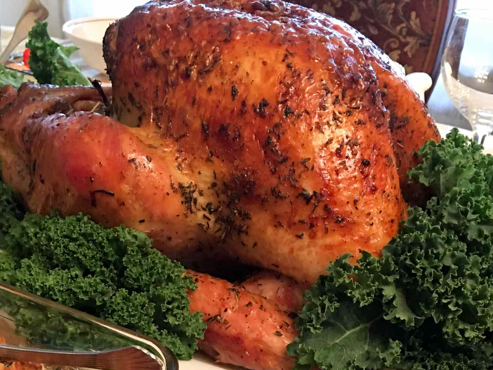

BBQ Turkey

Ingredients
- 1 (15 pound) whole turkey, neck and giblets removed
- 1 cup butter, softened
- ¼ cup chicken soup base
- 5 medium apples, cored and cut into wedges
- 3 sweet onions, peeled and cut into wedges
- 1 cup butter, cut into cubes
- 2 tablespoons minced garlic, or to taste
- 1 (750 milliliter) bottle dry white wine
Directions
-
Step 1
Preheat a gas grill for low heat.
-
Step 2
Rub turkey all over with softened butter, inside and out, Repeat with chicken base.
-
Step 3
Turn turkey so the breast is facing up. Insert a pop-up timer or heat-safe meat thermometer into the breast. Cover the pan loosely with aluminum foil.
-
Step 4
Place the roasting pan on the preheated grill and close the lid. Roast until the temperature in the breast reads 170 degrees F (75 degrees C) and the temperature in the thickest part of the thigh reads 180 degrees C (80 degrees C), about 4 hours depending on the temperature of your grill.